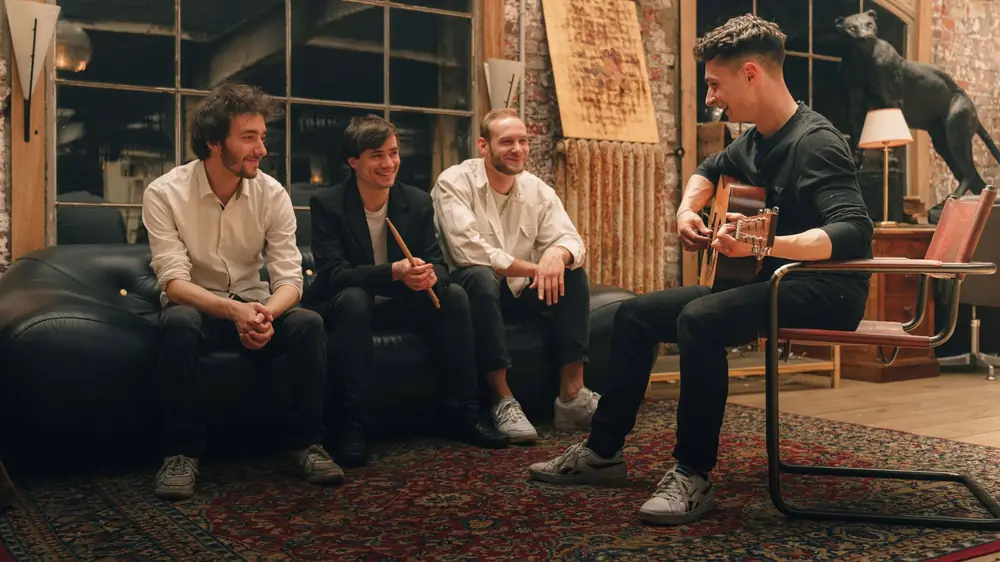
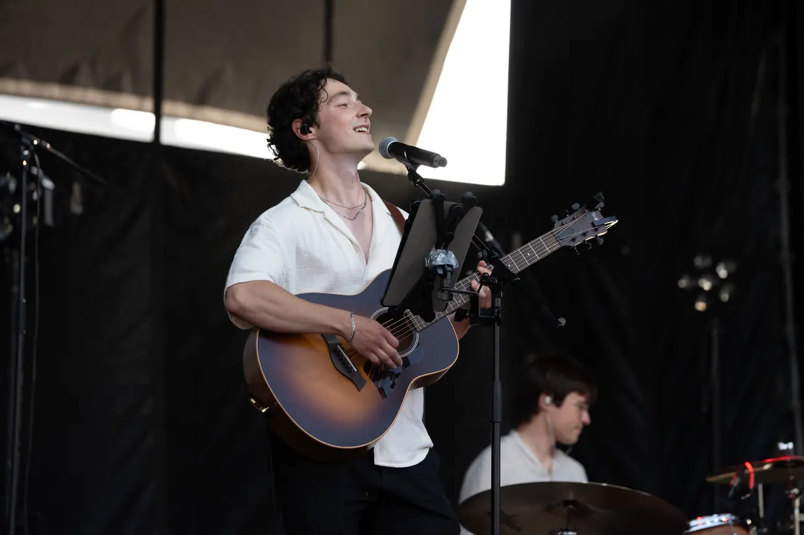
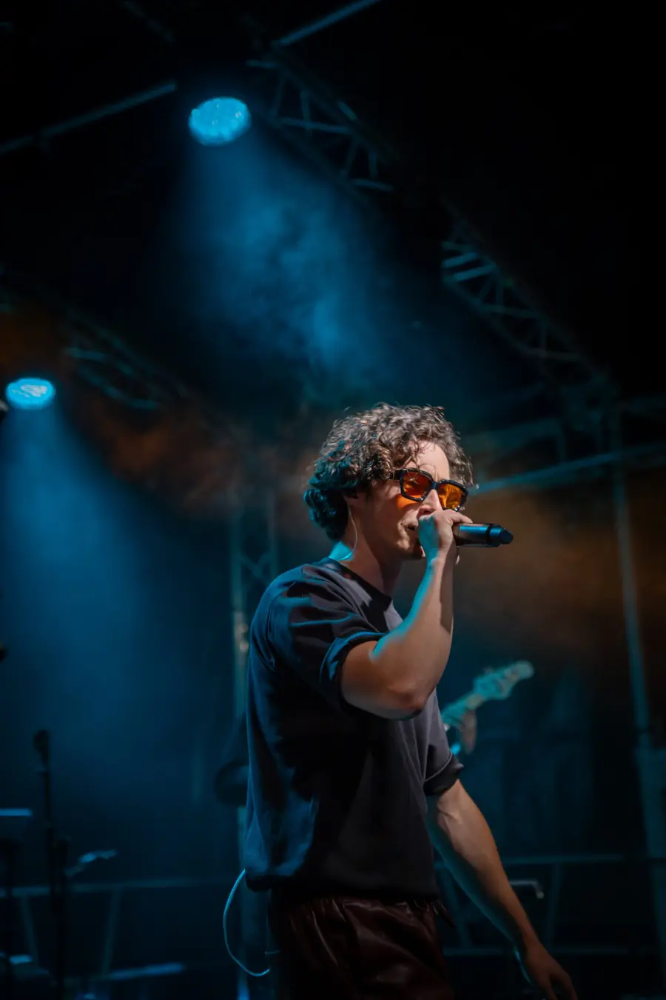
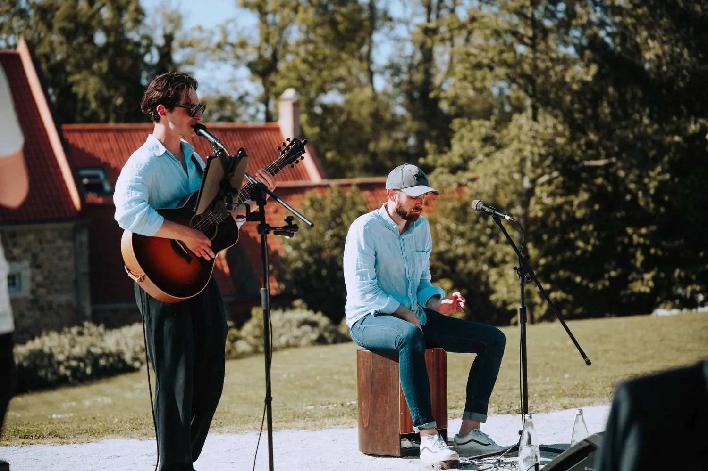
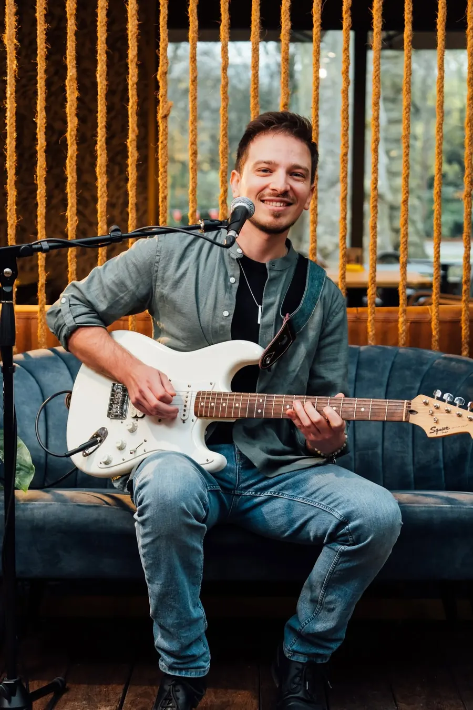

Voyez par vous-même,En live
Chaque vidéo a son histoire : le lieu, l'occasion, la formule. Montez le son.

Regarder : Le quartet, I'll Be There For You
Le quartet
I'll Be There For You
Entre session studio et live au Hall You Need, à Saint-André-lez-Lille
Le générique d'une série qui a marqué toute une génération, devenu l'un de nos morceaux signature : il lance l'ambiance à chaque fois, et rend les fans de la série très heureux.

Regarder : JamBag en live, Tourcoing Music Live
JamBag en live
Tourcoing Music Live
Ouverture de Michael Jones et Christophe Mali, devant plus de 10 000 personnes
Un concert à part pour nous : Tourcoing, c'est là que nous avons appris la musique. Pendant nos études, nous passions devant cette scène ; ce soir-là, nous y étions, avec Liselle en invitée.

Regarder : Grande formation, Château d'Avelin
Grande formation
Château d'Avelin
Les Accords du château d'Avelin, soirée de prestige entre mets et vins
Chapiteaux, chefs étoilés, repas gastronomique, et JamBag sur la grande scène pour mettre l'ambiance, avec Reynold et Liselle en invités. La pluie s'est invitée aussi : nous avons quand même ramené tout le monde devant la scène pour danser. Une grande fierté.

Regarder : Le duo, Shape of You, puis Freed from Desire
Le duo
Shape of You, puis Freed from Desire
Vin d'honneur de J. et B., au domaine WE, sur la Côte d'Opale
Un vin d'honneur au soleil, avec les demandes des mariés. On y voit nos deux ambiances : d'abord le cocktail dynamique, où l'on discute et danse tranquillement, puis notre moment signature, quand tout le monde vient danser devant nous. Chaleur écrasante, costumes trempés, et l'un des moments forts du mariage.
 Regarder : Le trio, Marry You
Regarder : Le trio, Marry You
Le trio
Marry You
Au Haut de Barbieux, dans l'esprit d'un vin d'honneur
Une vidéo mise en scène pour montrer le trio dans sa version la plus chill, au cajon : le Bruno Mars qu'on rêve d'entendre en sortant de la cérémonie.
 Regarder : Le solo, Long Train Runnin'
Regarder : Le solo, Long Train Runnin'
Le solo
Long Train Runnin'
Carl à la White Party des 60 ans de Valérie
Une belle soirée d'été, raffinée, faite de rires et de discussions tranquilles. Carl joue pendant le cocktail, et comme toujours, tout le monde finit par chanter et danser.
 Regarder : Le solo, Medley acoustique
Regarder : Le solo, Medley acoustique
Le solo
Medley acoustique
Carl au Safran, bar de plage du Touquet
Un coucher de soleil, une guitare, et à la fin plus personne à sa table : tout le monde est venu chanter et danser devant Carl. Le pouvoir de la musique live, en quelques minutes.

Regarder : Le solo, Crazy
Le solo
Crazy
Quentin, guitare électrique et voix
Le tube de Gnarls Barkley dans l'arrangement de Quentin : groovy, frais, avec cette énergie lumineuse qu'il met dans tout ce qu'il joue.